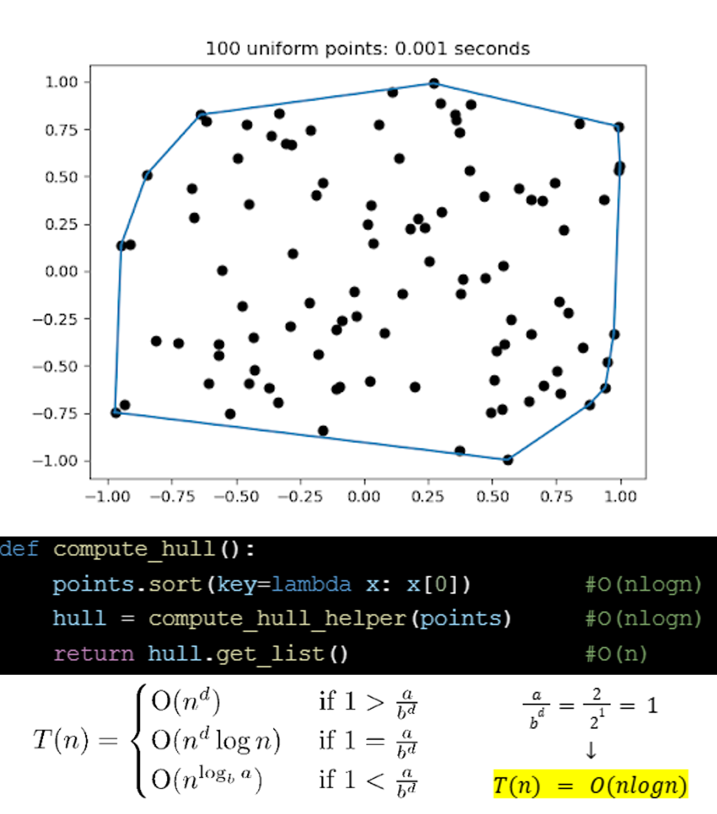
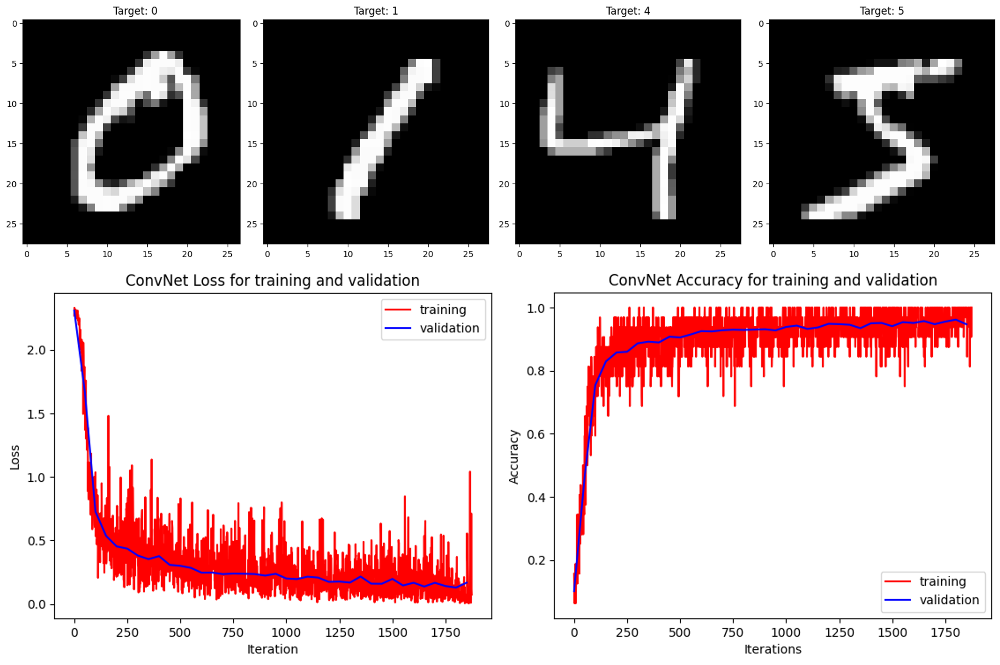
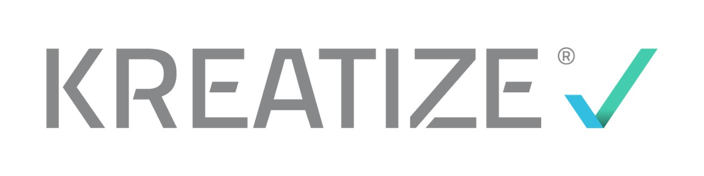

Programming Projects
RTX Internship
As an intern in the Modeling, Simulation, and Analysis (MSA) group,
I developed a MATLAB-based visualization tool to streamline the analysis of weapon performance from 6-DOF simulation data.
This tool took raw flight simulation data and displayed it in a user-friendly GUI, enabling engineers to quickly interpret and assess simulation performance.
It was then integrated into an existing toolsuite, helping to consolidate multiple standalone tools and significantly reducing engineers' troubleshooting time.
Ultimately, I completed this project weeks ahead of schedule and was selected to present my work to the MSA group director.
I was consequently awarded the RStars Accountability Award, which is given to interns who demonstrate exceptional performance and accountability.
This internship was a challenging and growth-filled experience that I am grateful for and very proud of. Image credit: RTX
Key skills: MATLAB, software integration, aerospace engineering principles, data processing.
Algorithm Design and Analysis Course

In this course, I explored a variety of fundamental algorithmic techniques,
including Divide and Conquer, Graph-based algorithms, Greedy algorithms, Dynamic Programming, Linear Programming, and Intelligent Search.
The image showcases my implementation of a convex hull algorithm which finds the convex polygon that encloses a set of points.
I used priniples of divide and conquer to solve this problem on sets as large as 1,000,000 points!
I also conducted both theoretical and experimental analyses of my algorithm's time and space complexity.
This course was both challenging and rewarding, strengthening my ability to tackle complex problems and write efficient, well-optimized code.
Key skills: Big-O time and space complexity analysis, algorithm design, Python.
Introduction to Deep Learning Course

I learned the fundamentals of deep learning and neural networks by implementing several different architectures,
including ConvNets, ResNets, UNets, to name a few. Along the way, I gained a solid understanding of the principles of generalization, regularization, and optimization in deep learning.
One particular project I worked on was to create a basic ConvNet to classify images from the popular MNIST dataset. Examples from this dataset are shown in the image (top), and it (bottom) also shows the results of my implementation where I was able to acheive 95% accuracy.
Key skills: Python, PyTorch, Supervised Learning, Generative Models.
Kreatize Internship

As a Software/Data Engineering Intern at Kreatize, I was tasked with evaluating the usability of a commercial software tool for improving manufacturing time/cost estimations.
To do so, I developed a Python script to implement that commercial software into the company workflow using REST API and collected experimental data to evaluate its effectiveness.
This project was a great opportunity to learn about REST API, SQL, and data analysis, and I was able to provide valuable insights to the company about the software's usability.
Image credit: Kreatize
Key skills: Python, SQL, REST API.